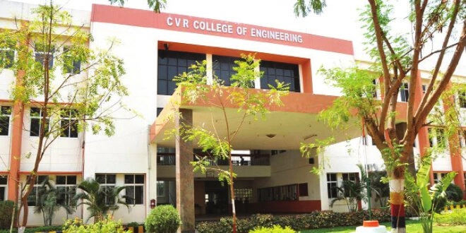
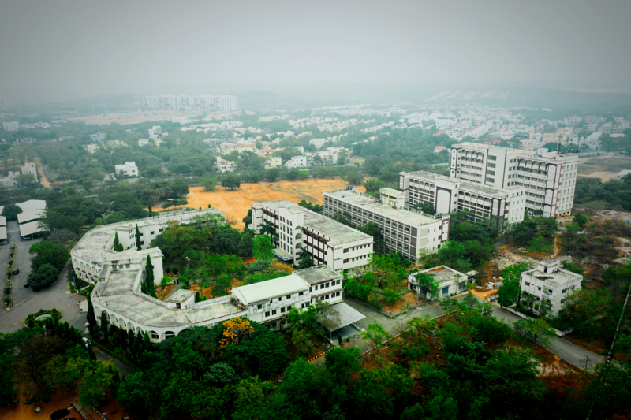

This Website Showcases the Top 10 Engineering
Collegs via Eamcet/Ecet Ranking! so,It can be helpful for students
for guidance for placing in better colleges
#1 JNTUH
Jawaharlal Nehru Technological University, Hyderabad, was established on 2nd october 1972 by the Legislature of the State of Andhra Pradesh as the first Technological University in the country. It has been in the forefront for the past 44 years in providing quality technological education of relevance in the State of Andhra Pradesh. After 36 years of existence it was restructured into 4 different Universities by the Government vide Government Ordinance No.13, dated 18th August 2008 and Act of State Legislature No.30 dated September 2008 and this new University has been designated as Jawaharlal Nehru Technological University Hyderabad (JNTUH).
#2 OU
Osmania University, established in 1917, is the seventh oldest in India, the third oldest in south India and the first to be established in the erstwhile princely State of Hyderabad.Through out its existence of over Ten decades, it has shown remarkable progress and sustained an integrated development of all faculties. It has significantly contributed to the academic and economic development of not only the region but also of the country. Its alumni have distinguished themselves nationally and internationally in various spheres of life and are spread far and wide around the world.
#3 CBIT
Chaitanya Bharathi Institute of Technology (CBIT) is a private engineering college located in Gandipet, near Financial District, Hyderabad, Telangana, India. The college is affiliated to Osmania University[1] and is accredited by the National Board of Accreditation. The institute received an autonomous status in 2013. It has significantly has higher Placements than other Colleg
#4 VASAVI
Vasavi College of Engineering (Autonomous) (VCE) is a self-financed technical institution located in Ibrahimbagh, Hyderabad, India. It is 12 km from the city center. The institution is affiliated to Osmania University, Hyderabad. Founded in 1981 by the Vasavi Academy of Education, it is accredited by the National Board of Accreditation. The college was founded by Pendekanti Venkatasubbaiah, a statesman of independent India
#5 VNR VJIET
Vallurupalli Nageswara Rao Vignana Jyothi Institute of Engineering and Technology (VNRVJIET) is a private engineering college in Hyderabad, India recognized by All India Council for Technical Education(AICTE) and affiliated to the Jawaharlal Nehru Technological University, Hyderabad.
Undergraduate programs- CE, EEE, ME, ECE, CSE, EIE and IT in the institute are accredited by the National Board of Accreditation (NBA) New Delhi, since 2008. The institute has Autonomous Status till 2028-2029 A.Y. granted by UGC.
#6 GRRR
Gokaraju Rangaraju Institute of Engineering and Technology is a private engineering college established in 1997 in Hyderabad, Telangana, India. GRIET is ranked by NIRF at 149th Place in 2022.Pragnya is the annual techno-management symposium of GRIET and is celebrated in December every year for three days. It provides paper presentations, workshops, competitions, technical quizzes, business quizzes, programming contests, design contests, and guest lectures.[
#7 CVR

The CVR College of Engineering was established in 2000. It is approved by the All India Council for Technical Education and accredited by the National Board of Accreditation, India.CVR College of Engineering was affiliated with Jawaharlal Nehru Technological University, Hyderabad. The college is located in Mangalpally(V), Ibrahimpatnam(M), Ranga Reddy, 20 km from the center of Hyderabad, India. The college is supported by the Cherabuddi Educational Society.
#8 VMEG
Vardhaman College of Engineering (VCE), a distinguished autonomous institution affiliated with JNTU, Hyderabad, is situated in the serene environs of Shamshabad, Hyderabad. Located within the tranquil Kacharam Village in the Ranga Reddy district, the campus is strategically positioned away from the urban clamor, offering an ideal setting for academic pursuits amidst nature’s bounty.
#9 MVSR
#10 MGIT

Mahatma Gandhi Institute of Technology (MGIT) is a technological institution (Autonomous) located in Gandipet, Hyderabad, Telangana, India. It was started in 1997 by the Chaitanya Bharathi Educational Society (CBES), Hyderabad, registered under the Societies Registration Act. The annual intake is 900 students at the undergraduate level and 108 students at the postgraduate level. The institute is affiliated with Jawaharlal Nehru Technological University, Hyderabad (JNTUH), The institute has Autonomous Status till 2021-2031 A.Y. granted by UGC and offers a four-year Bachelor of Technology, in eleven disciplines and two-year Master of Technology, in six disciplines prescribed by JNTU. The college is accredited by the National Board of Accreditation and is ISO 9001:2000 certified